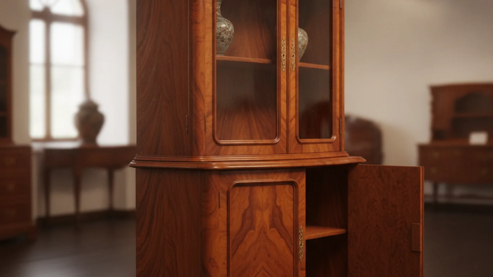
Salt Lake City, Utah · Antique restoration
Bring the piece you can't replace back to life.
Antique and heirloom furniture repair, hand refinishing, and full reupholstery. The kind of restoration you see, not just read about. Send a photo of your piece and we'll tell you what it needs.
- Refinishing & French polish
- Reupholstery
- Antique & heirloom repair
- Photo-to-quote
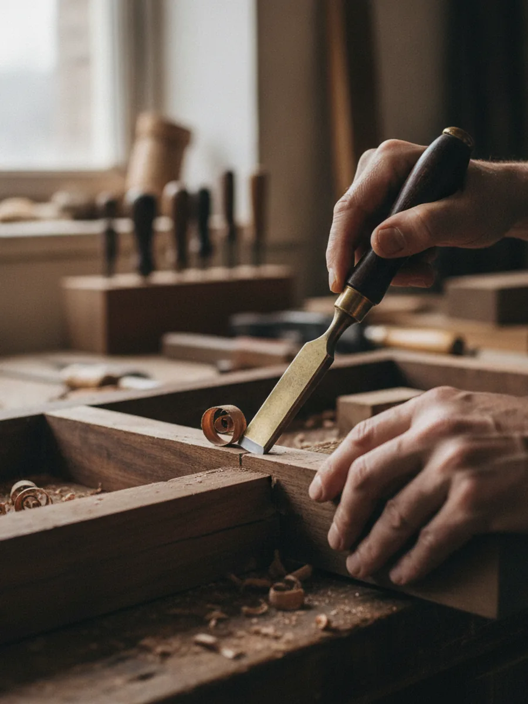
Old-world hands, honest repair
Some furniture is worth more than the day it was bought.
A dresser handed down three generations. A chair from a shop that closed decades ago. When a piece has history in it, replacing it isn't an option, and a factory finish won't do it justice.
European Expressions restores antique furniture the way it was made: by hand, one joint and one coat at a time. Structural repair, careful refinishing, and reupholstery that respects the original lines of the piece.
- Hand refinishing & French polishing
- Frame & joinery repair
- Reupholstery in your choice of fabric
See the difference
Every piece is one of a kind.
So is every restoration.
The work below is what a full restoration looks like: worn, tired pieces brought back to the condition they deserve. Photos are how we start every quote.
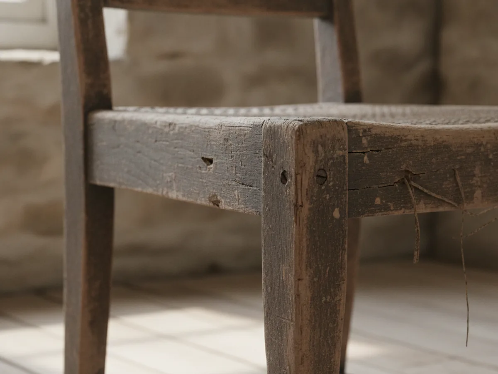
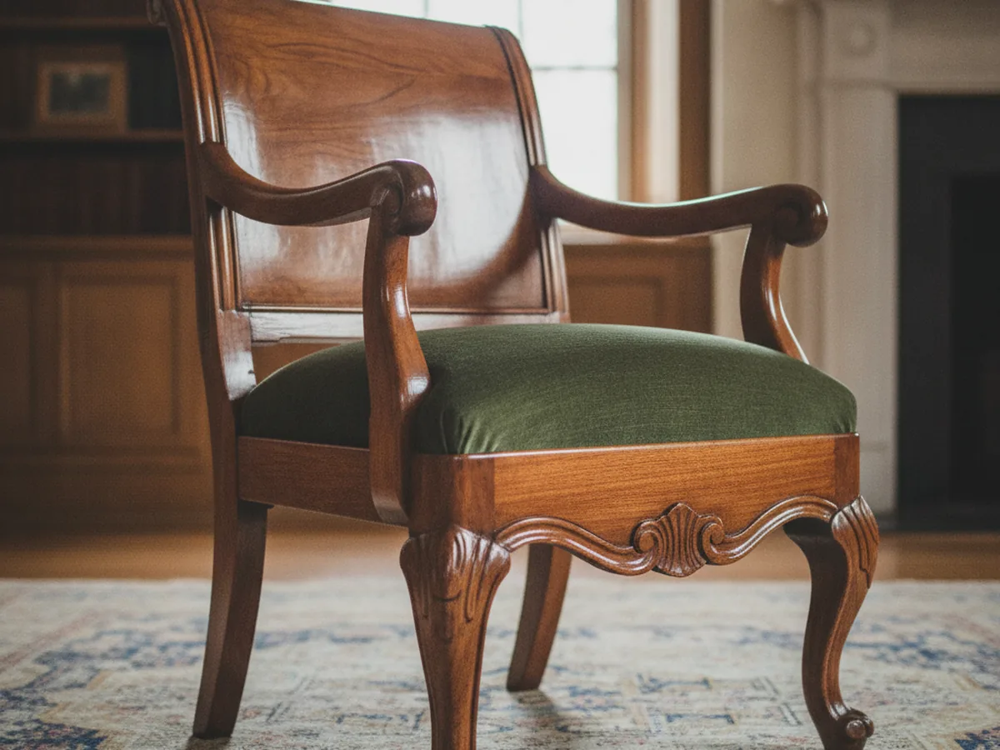
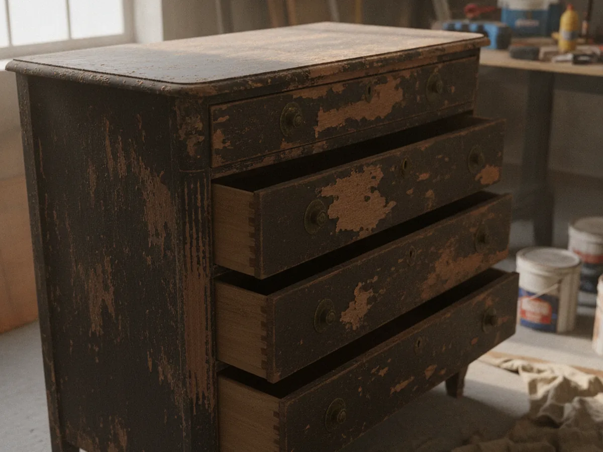
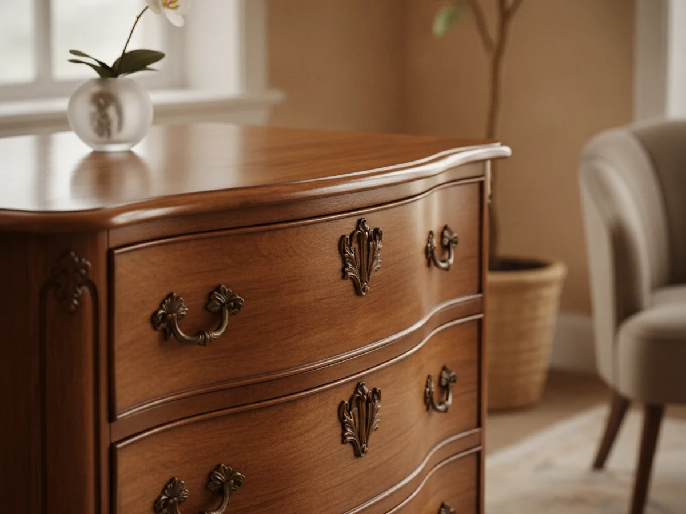
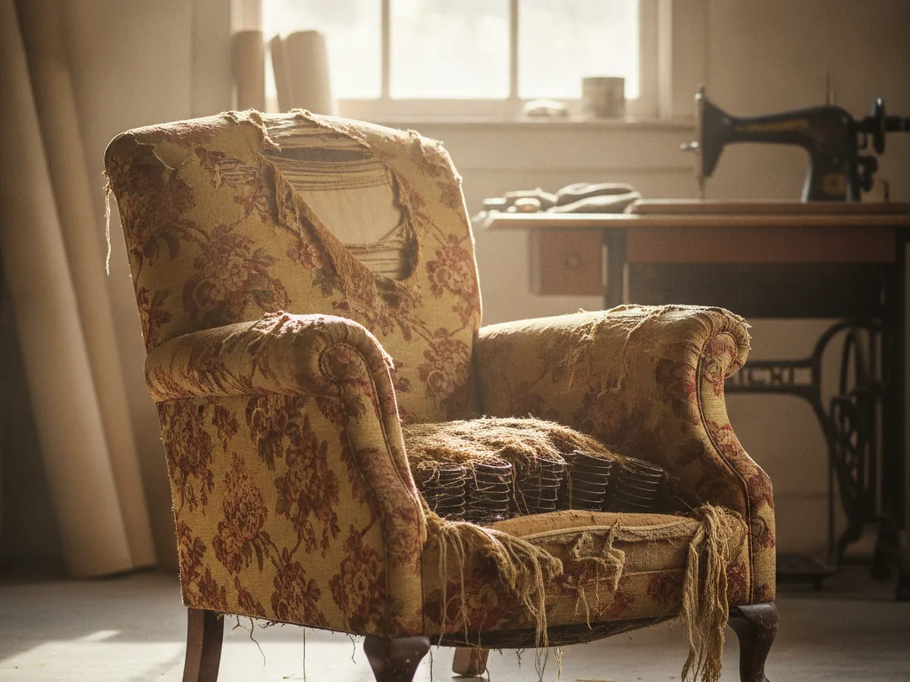
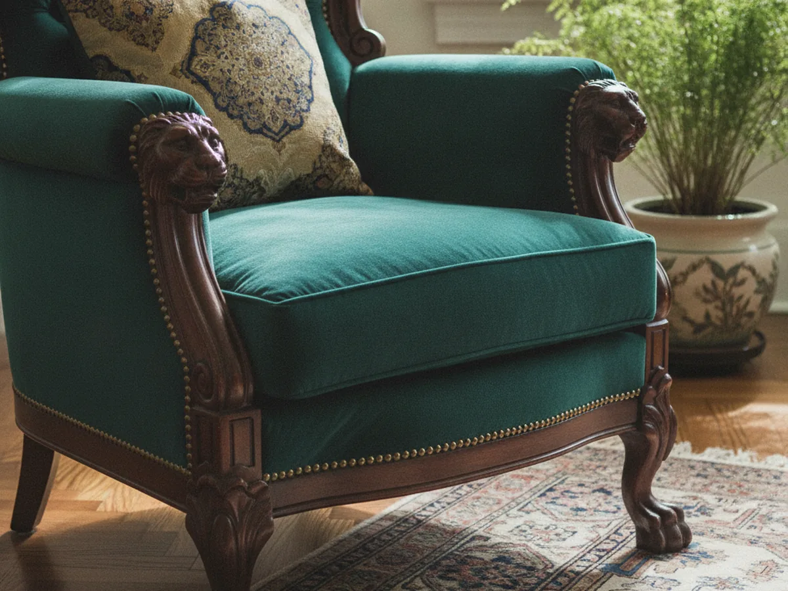
What we do
Three ways we bring furniture back
Most pieces need a little of each. Tell us what you have and we'll sort out what it actually calls for.
-
Refinishing & French polish
Stripping tired finish, repairing the grain, and rebuilding a hand-rubbed or French-polished surface that shows the wood off instead of hiding it.
-
Repair & restoration
Loose joints, broken legs, cracked veneer, missing hardware. Structural repair that keeps a piece usable for another generation, not just presentable.
-
Reupholstery
Reframing, re-webbing, and reupholstery in the fabric you choose, cut and fitted to the original lines of the chair or sofa.
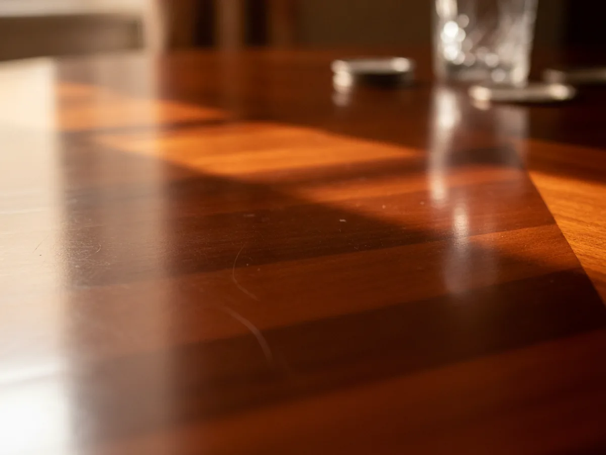
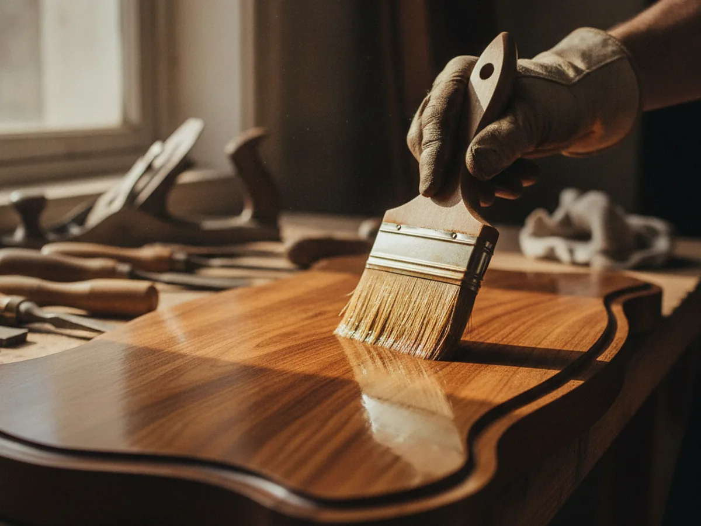
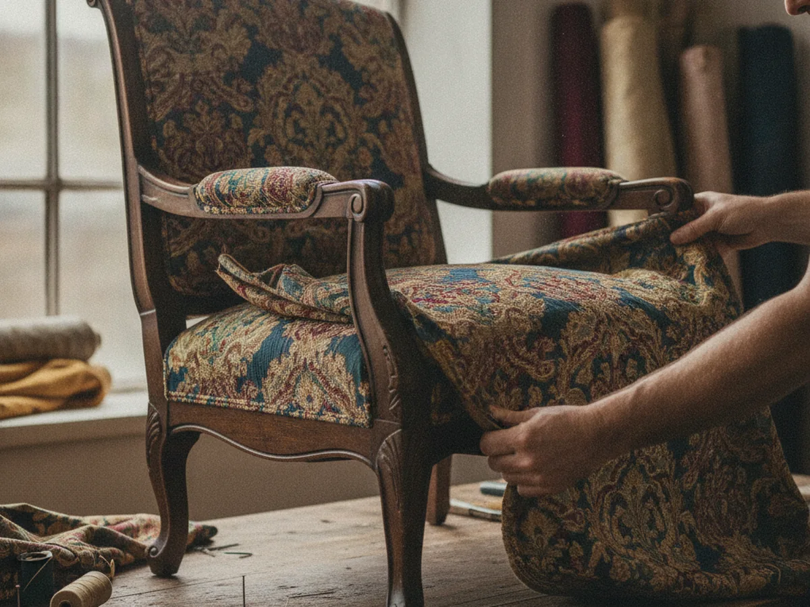
How a quote works
It starts with a photo
No showroom visit needed to get started. Snap a few pictures of the piece and we'll take it from there.
-
1
Send a photo
Email pictures of your piece, a wide shot plus any damage close-up, to Patrick.
-
2
We assess it
We look at what the piece needs, what's original, and what it will take to bring it back.
-
3
You get a custom quote
A clear plan and price for the restoration, built around your specific piece.
Ready when you are
Have a piece worth saving?
Send a photo and we'll tell you what it needs and what it costs. No obligation, no showroom trip.
Or email photos straight to Patrick@EuroEx1.com